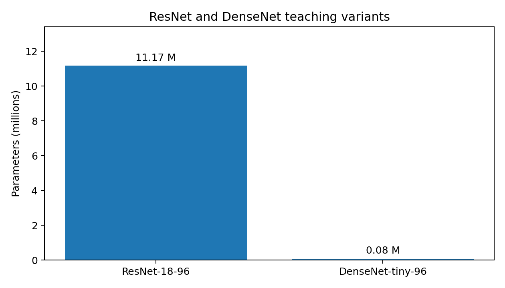
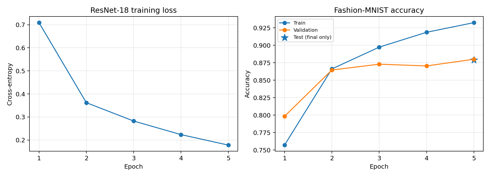

上周把现代卷积网络拆成AlexNet、VGG、NiN和GoogLeNet，本周继续学习第7章7.5—7.7。重点从“怎样组织卷积”转向“怎样让更深的网络稳定训练”：BatchNorm管理训练与推理的统计量，ResNet把输入沿捷径传到后面，DenseNet则把已有特征沿通道持续拼接。
本周实际完成：8个编号示例运行成功，6项自动测试通过。ResNet-18教学变体使用与上周相同的12,000张训练图片、2,400张验证图片和96×96输入，固定训练5轮，最终验证准确率88.00%，官方测试集准确率87.91%。DenseNet完成结构和通道增长验证，暂未做同预算训练。
这篇复盘主要记录
- BatchNorm为什么要区分训练模式和推理模式
- 残差块怎样用恒等或1×1投影捷径对齐形状
- DenseBlock为什么会让通道数逐层增加
- ResNet教学实验的划分、曲线与结果边界
一、BatchNorm的两个状态
BatchNorm先在一个小批量内计算均值和方差，把激活标准化，再用可学习的缩放参数γ和偏移参数β恢复模型需要的表达能力。它还维护running mean和running variance，供推理阶段使用。
训练模式下，当前批量的统计量参与前向计算，同时更新运行统计；推理模式下，层不再使用当前输入的统计量，也不再更新它们。代码中调用model.train()和model.eval()不是形式上的切换，而是会改变BatchNorm和Dropout的计算行为。
layer = nn.BatchNorm2d(3)
layer.train()
train_output = layer(images) # 当前批量统计量，并更新running statistics
layer.eval()
eval_output = layer(images) # 使用running statistics本次用同一个批量观察到，训练输出的每通道均值接近0、标准差接近1；训练后running mean约为0.53、0.51和0.49，切换到eval后输出与训练输出的最大差异约为5.67。验证集和测试集必须在eval模式下计算，否则指标会混入当前批次统计波动。
二、ResNet让输入有一条捷径
普通深层网络要求连续层直接学习完整映射。ResNet把它改成F(x) + x：卷积分支学习残差，捷径分支保留输入。若输入和输出的通道数、空间尺寸相同，捷径就是恒等映射；若尺寸或通道改变，则用1×1卷积和相同步幅完成投影。
residual = self.shortcut(inputs)
outputs = self.conv1(self.activation(self.bn1(inputs)))
outputs = self.conv2(self.activation(self.bn2(outputs)))
return outputs + residual本周的恒等残差块把(batch,8,12,10)保持为同样形状；投影残差块把(batch,16,24,20)变为(batch,32,12,10)。两种情况都沿完整前向路径反向传播，输入梯度没有断开。
ResNet-18教学结构有一个初始卷积、四个阶段，每个阶段包含两个残差块，共8个残差块；每个残差块由两层3×3卷积组成。与上一周的GoogLeNet一样，末端使用全局平均池化和线性分类层，不过ResNet的模块边界更简单。
三、DenseNet把所有旧特征留下来
DenseNet不把新特征与旧特征相加，而是在通道维拼接。一个DenseBlock中的第一个层接收输入，第二层接收输入和第一层输出，后续层继续接收此前所有特征。如果输入通道为24，有3层、增长率为8，输出通道就是24 + 3×8 = 48。
features = [inputs]
for block in self.blocks:
features.append(block(torch.cat(features, dim=1)))
return torch.cat(features, dim=1)通道不断增加会带来内存和计算压力，所以DenseNet在块之间使用transition层：1×1卷积先压缩通道，再用平均池化缩小空间尺寸。本周DenseNet教学变体使用4个稠密块和每层增长16个通道，参数量只有79,226；这个数字不能直接说明它比ResNet更快，因为激活图和拼接成本也会影响运行。
四、三种连接方式对应三种形状规则
| 模型 | 参数量 | BatchNorm层 | 残差块 | 稠密块 |
|---|---|---|---|---|
| ResNet-18-96 | 11,172,682 | 17 | 8 | 0 |
| DenseNet-tiny-96 | 79,226 | 13 | 0 | 4 |
残差相加要求两个分支的批量、通道、高和宽全部相同；通道拼接只要求批量、高和宽相同，通道数可以相加；transition层则主动改变通道和空间尺寸，为下一个块准备输入。把这三条规则写在代码旁边，比只记“ResNet相加、DenseNet拼接”更不容易出错。

五、固定划分后训练ResNet
为了和上一周实验保持可读的对照，我继续使用Fashion-MNIST的固定设置：seed=42，从官方训练集固定抽取12,000张训练图片和2,400张验证图片，验证样本与训练样本不重叠；官方10,000张测试图片只在最后的第5轮模型上评估一次。图片调整到96×96并按0.5均值和标准差归一化，不使用数据增强。
优化器使用Adam，学习率0.0003，weight decay为0.0005，batch size为128，训练5轮。BatchNorm在训练阶段更新运行统计，验证和测试阶段使用eval模式。模型保存为ResNet-18教学变体，恢复到CPU后抽查8张测试图片，logits逐位一致。
| 轮次 | 训练交叉熵 | 训练准确率 | 验证准确率 |
|---|---|---|---|
| 1 | 0.7091 | 75.71% | 79.83% |
| 2 | 0.3621 | 86.62% | 86.46% |
| 3 | 0.2824 | 89.73% | 87.29% |
| 4 | 0.2235 | 91.86% | 87.04% |
| 5 | 0.1781 | 93.24% | 88.00% |
最终测试准确率为87.91%。训练准确率从75.71%升到93.24%，验证准确率从79.83%升到88.00%。训练和评估总耗时约83.28秒，包含数据变换和逐轮验证，不能作为纯GPU吞吐量基准。

训练准确率来自每批参数更新前、启用BatchNorm训练状态下的预测；验证和测试在eval模式下计算，因此不能把三条曲线的差异简单解释成单一的过拟合指标。本次只有一个随机种子和一组训练预算，DenseNet没有进行同条件训练，不能据此比较两种架构的优劣。
六、测试怎样覆盖结构行为
6项自动测试覆盖了ResNet-18的batch为2前向输出、投影捷径的空间和通道变化、恒等块的梯度传播、DenseBlock的增长率、DenseNet中的BatchNorm层，以及真实训练步骤对参数的更新。另有不等长批次的评估测试，确保准确率按样本数汇总。
本周的示例还单独检查了BatchNorm的训练/推理输出差异、残差相加和DenseNet通道拼接。模型保存恢复测试使用同一批图片比较logits，避免把“文件能读取”误写成“模型恢复正确”。
七、下周继续第7章实验
下一步继续复习批量规范化、ResNet和DenseNet的细节，补充参数与运行统计的手算，并在统一数据划分、训练轮数和优化器设置下做一个小规模ResNet与DenseNet对照。之后再整理分类错误和训练曲线，观察连接方式对优化过程的影响。
教材参考：批量规范化、ResNet、DenseNet。上周内容可回看AlexNet、VGG、NiN与GoogLeNet复盘。